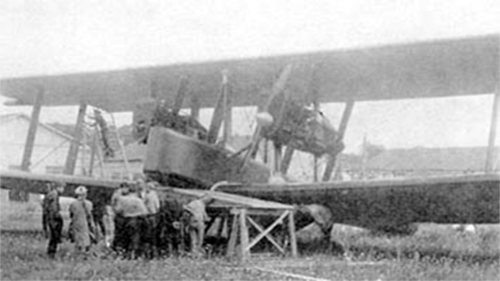

ТБ-1

- Разработчик: ОКБ Туполева
- Страна: СССР
- Первый полет: 1925
- Тип: Тяжелый бомбардировщик
ТБ-1 (АНТ-4) — это советский бомбардировщик-торпедоносец, разработанный авиационным отделом ЦАГИ и произведённый на заводе № 22. Первый полёт состоялся 26 ноября 1925 года, а эксплуатация началась в 1929 году.
| Летно технические характеристики | |
|---|---|
| Модификация | ТБ-1 |
| Размах крыла, м | 28.70 |
| Длина, м | 18.00 |
| Высота, м | |
| Площадь крыла, м2 | 120.00 |
| Масса, кг | |
| - пустого самолета | 4520 |
| - нормальная взлетная | 6810 |
| Тип двигателя | 2 ПД М-17 |
| Мощность, л.с. | 2 х 680 |
| Максимальная скорость , км/ч | 207 |
| Крейсерская скорость , км/ч | 178 |
| Практическая дальность, км | |
| Продолжительность полета, ч | до 6 |
| Максимальная скороподъемность, м/мин | 170 |
| Практический потолок, м | 4830 |
| Экипаж, чел | 6 |
| Вооружение: | шесть 7.62-мм пулеметов ПВ-1 бомбовая нагрузка - 1000 кг |